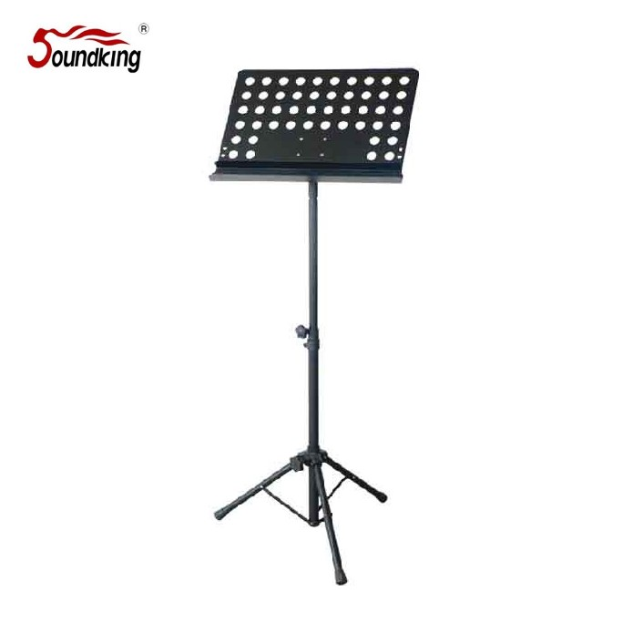

DF013-2는 DF013B의 상위 모델로, Ø30 mm 타공 플레이트에 2단 악보 받침 구조를 추가했습니다. 두꺼운 합창 악보나 여러 장의 반주 악보를 안정적으로 지지할 수 있어, 오케스트라·합창단·성가대 등 전문 현장에 적합합니다.

DF013B의 2단 받침 확장 모델. 두꺼운 합창 악보·여러 장 반주 악보를 안정적으로 지지하는 2단 악보 받침이 추가되었습니다.
DF013-2는 DF013B와 동일한 Ø30 mm 타공 스틸 플레이트와 940–1420 mm 높이 조절, 3.8 kg 트라이포드 베이스를 공유하면서, 악보 받침을 2단 구조로 확장한 모델입니다. 1단만으로는 밀려 내려갈 수 있는 두꺼운 합창 악보나 여러 장을 동시에 펼쳐 두는 반주 악보를 안정적으로 지지할 수 있습니다.
전용 가방은 별매(₩5,500)입니다. 오케스트라·합창단·성가대·교회 음악팀 등 악보 매수가 많은 전문 현장에서 특히 활용도가 높습니다.
| 모델명 | DF013-2 |
|---|---|
| 타입 | Perforated Steel Music Stand · 2-Tier Support |
| Height | 940 – 1420 mm |
| Plate Size | 475 × 345 mm |
| Hole | Ø30 mm 타공 · 2단 받침 |
| Material | Steel |
| Net Weight | 3.8 kg |
| 전용 가방 | 별매 (₩5,500) |
| 권장소비자가 | 60,500 원 / 개 (VAT 포함) |
※ 본 사양 · 단가는 수입원(현대에이브이씨) 2026-01-01 스탠드 가격표 기준입니다.